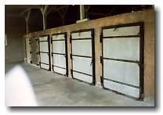

Weimar, Germany
|
Weimar, Germany |
|
"If there's one thing in Germany not to be missed this year, Weimar is it." - Let's Go Germany 1999. Trip #5: Saturday June 19 - Sunday June 20, 1999 This makes it 5 weekends in a row of travelling. And the way it’s going, it’s not about to slow down. Weekend travel anywhere in Germany is 35DM for 5 people per day. Which makes it about $6 per person if there’s a group of 5. The only downside is that the price only applies to slow economy trains. Which can be a burden at times. We were the victims of this burden this weekend… On the 2nd of 3 trains to Weimar, the train stopped in the middle of nowhere. Probably due to mechanical problems. After about a 20min delay, the train started to puff along again. By this time, we were worried that we weren’t going to make the next connecting train. Then we got a message that because the train is so late, it is no longer going all the way to the destination that we require. Missing the next train was no longer an issue. We had to find an alternative route. So, about 6 hours later (1.5 hours and a train more than we initial planned for), we arrived in Weimar. Weimar has been designated Europe’s Cultural Capital for 1999. 4 years of preparation was needed to bring this celebration alive. After reading such things (and many other tourists luring words), we (Paul, Ben, Ryan, Karyn, & I) were expecting to have activities thrown in our face upon arrival. We felt no need to make detailed plans. We were wrong. Other than fireworks, Weimar didn’t have much to offer that was specific to being Europe’s Cultural Capital. Thus, we spent the first couple of hours meandering hopelessly and wondering what we should do… We first checked in at our hostel. Most hostels we’ve been staying at have been expensive, clean, and well organized. This is the first time that we find really cheap accommodation. I guess you get what you pay for. The place is run by a bunch of students for students. From what I saw in residence, students have a hard time keeping their own rooms clean. Asking them to clean others’ is asking for trouble. When we were shown our room, the hostel employee excused himself as he cleared away all the old sheets and removed the empty beer bottles. With the price we were paying, there was nothing really wrong with that. Oh, the shower is worth noting. None of us showered there, but the place had a big stall with 2 showerheads and a chair. I guess it’s a multiple person shower, while the chair is for a spectator. Hmmm. To summarize the place, it was pretty dirty, but it was definitely livable. They also had a common room where everyone can kickback, relax, and share stories. This was exactly what we were looking for. And it was friendly to the wallet. Weimar’s main attraction is Goethe’s house. Goethe being Germany’s most famous poet/writer. He spent 50 years there, living in a house that was given to him by the city. The city bent over backward trying to keep him there too. They gave him everything, including a garden house and his own park. But the entry to his house (which is now a museum) was filled-up. The best we could do was to make a reservation to return at 6pm. After searching for over an hour, we found what’s called the Parkhohle. It’s a large underground cave where wine used to be stored. The receptionist put us down for a tour, then asked us to wait aside for the tour guide. She then put on a hard hat and told us that the tour is commencing. So, she was a receptionist, who was also the tour guide, and possibly every other position that was needed to run this operation. After indulging in Goethe’s house, we found ourselves having a big dinner. Out of nowhere came fireworks. I jumped about 3 feet out of my chair. The fireworks were super close, and took us all off guard. No measly small sparks here. Full fledged highflying fireworks. Watch out for Germany in this year’s Benson & Hedges’ English Bay Fireworks. We realized the significance of Goethe that night. We met many students at the hostel that studied literature. Goethe is to literature what Newton is to engineers. Bianca (a german girl we met) talked passionately about Goethe and his work. Our engineering polluted minds did not expand in the same way as hers did when going through Goethe’s house. That night, the rest of the hostel guests invited us to go to a club to party. All of Sunday was spent at Buchenwald. About a 20min bus ride from Weimar, Buchenwald is a former Nazi Concentration camp. Between 1937 and 1945, the concentration camp held over a quarter of a million Jews, gypsies, gays, and political prisoners. Most did not survive the holocaust. Many things that used to be there, haven’t been left preserved (such as where the inmates lived), but what remains on the ground of those buildings and the stories that were being told were enough to give anyone the creeps. What has been preserved is the cremation building, disinfecting building, bunkers (torture cells), and storage building. There were also numerous museums displaying the history of the site. It was really interesting. So, we didn’t get in touch with culture as we thought we would, but the sight of a concentration camp shook us up. Another weekend trip comes to a close. |
 johnnyo@canada.com
johnnyo@canada.com